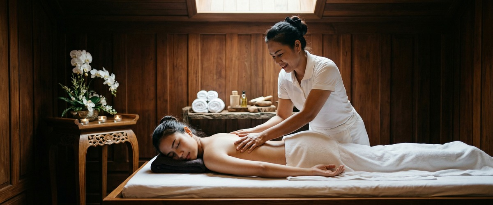
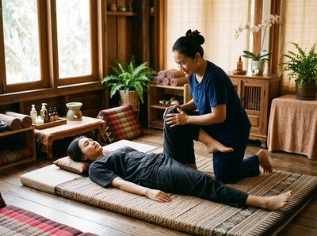
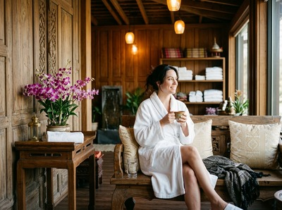

When you are feeling low, even ordinary days can feel heavy.

Getting through work, staying present with the people you care about, and finding motivation for things you normally enjoy can all take real effort. If you have been searching for massage for low mood, the answer is backed by solid research. It starts with understanding what is actually happening in your body when your mood dips.
Low mood is a mental and emotional state marked by sadness, low energy, and a reduced sense of wellbeing. According to the NHS guidance on low mood and depression, common triggers include work pressure, relationship problems, bereavement, money stress, and physical illness. For many people, the causes build up slowly over time.

When the body is under ongoing stress, cortisol levels rise. Cortisol is the body's main stress hormone, and it reduces the production of serotonin and dopamine — the chemicals that regulate mood, drive, and reward.
The result is a state that makes it genuinely harder to feel well. It is not a matter of perspective or willpower.
Research published on PubMed by the Touch Research Institute at the University of Miami found that massage therapy reduces cortisol and raises serotonin and dopamine. These are the same chemicals targeted by many antidepressants. The studies covered depression, chronic pain, and stress across a range of groups.
Therapeutic touch also activates the parasympathetic nervous system, shifting the body out of the fight-or-flight state that chronic stress creates. When your nervous system settles, muscles release, breathing slows, and mental noise quietens.
The effect is felt straight away and builds with regular sessions. It is sometimes called the "rest and digest" response — and for people carrying sustained emotional weight, that shift matters.
At Thai Massage Greenock, treatments including Traditional Thai Massage — which uses pressure and assisted stretching along the body's energy lines — and Thai Aromatherapy Massage, which combines therapeutic touch with calming essential oils, are well suited to the physical and emotional toll of low mood. You can book your session online and choose the treatment that feels right for where you are right now.
Every session begins with a short chat about how you are feeling and what you want from the treatment. Jariya trained at Bangkok's renowned Wat Po temple and keeps notes on each client to adjust every session to suit their needs.
If you are holding physical tension alongside low mood, areas like the shoulders, neck, and upper back are often prioritised. Jariya works with what is present on the day — not a fixed routine.

For clients dealing with low mood, a slower and more grounding session tends to work best. Thai Oil Massage and Thai Aromatherapy Massage both use sustained, flowing contact that supports deep relaxation.
The studio is at 0/2 16 South Street in Greenock. It is calm and unhurried. There is no script here — you are seen as a person, not a booking slot.
Anyone carrying sustained emotional weight can benefit, but some groups are particularly well served. These include people managing long-term work stress, those going through life changes such as job loss, a relationship ending, or bereavement, and carers who give a great deal to others and have little left for themselves.
People whose low mood is tied to pain or poor sleep also respond well, as do those who notice their mood dip in autumn and winter. If you recognise yourself in any of these, booking a session is a practical and evidence-backed first step.
It is both, and the two are connected. Research from the Touch Research Institute at the University of Miami found that massage reduces cortisol and raises serotonin and dopamine. These are the same chemicals involved in mood control.
The relaxation response is not a side effect. It is a real shift in body chemistry that supports better mood over time.
Many clients notice a real shift in mood and tension after just one session. The effects build with regular treatment.
For ongoing low mood, sessions spaced one to two weeks apart tend to give the best results. Jariya will talk through what might work best for you during your first visit.
Yes. Massage therapy works alongside other treatment — it does not replace it. It can be used with medication, counselling, or other support.
If you have concerns, speak with your GP first. In most cases, there is no reason not to combine massage with other care.
Thai Aromatherapy Massage and Thai Oil Massage work well for low mood. They combine steady therapeutic touch with calming oils and flowing movements that support a deep parasympathetic response.
Traditional Thai Massage is also very effective. Its rhythmic pressure and assisted stretching release the physical tension that often builds alongside emotional heaviness.
Not at all. Jariya will ask how you are feeling in practical terms — where you are holding tension and what you want from the session. You are not expected to talk through what is on your mind.
Many clients find that having quiet, unhurried time for themselves is part of what makes the difference.
Traditional Thai massage works along the body's sen energy lines using pressure and passive stretching. This method was developed over centuries at temples including Bangkok's Wat Po.
It works the whole body at once, addressing physical tension and nervous system strain together — which makes it well suited to the mix of physical heaviness and mental fatigue that often comes with low mood.